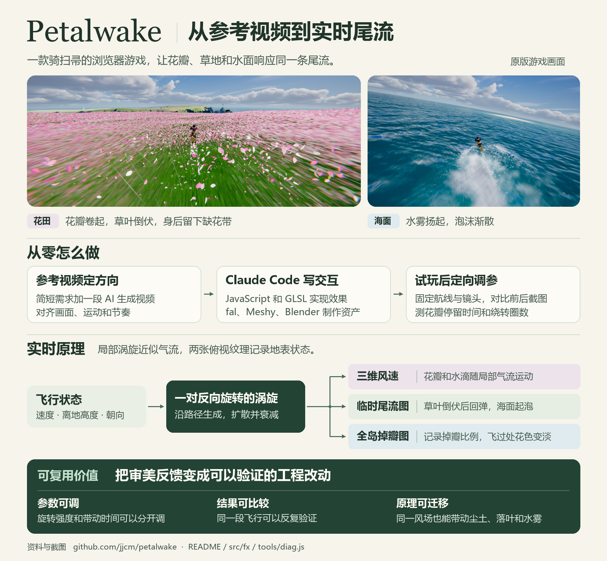

参考能沟通
先挑一段短视频明确想要的动势，再把关键行为写成可观察的目标，比如加速时尾流变宽、贴地时才强烈扰动植被。
研究项目 007
骑扫帚掠过岛屿，花瓣被卷起，草叶倒伏，海面扬起水雾。飞得越低、越快，地表的反应越明显。回头还能看见花田里留下的痕迹。
原库用 Three.js、WebGL2 和 GLSL 实时计算这些变化。我们研究的是怎样用一段视频定方向，再把观感变成可调参数和可以重复验证的试飞。

同一条尾流经过不同地表，扬起的东西和留下的痕迹也不同。
点 TAKE OFF 起飞。W/S 俯冲和爬升，A/D 转向，Shift 加速。
作者用 Claude Code（Claude Fable 5.2）把视觉目标实现成游戏，再通过几轮试玩反馈调整。
用简短需求和 AI 生成的参考视频对齐画面、运动和整体氛围。
Claude Code 编写运行逻辑、着色器和地形工具。fal 做概念图与材质，Meshy 生成部分网格，Blender 处理资产并用脚本建模城镇。
源码带有脚本试飞和截图入口。可固定起点、初速、操控与镜头，比较画面和花瓣的停留时间、绕转圈数。
做自己的实时效果时，可以把「感觉还差一点」落到一条可复现的测试和一个具体参数上。
先挑一段短视频明确想要的动势，再把关键行为写成可观察的目标，比如加速时尾流变宽、贴地时才强烈扰动植被。
花瓣太快掉出镜头时，先调沿飞行方向的带动时间。用同一段试飞比较花瓣在近处停留多久，再检查旋转圈数有没有明显变化。
把气流作为独立数据供不同材质与粒子读取。同一套行为可以用于草、落叶、尘土或水雾，并保留各自的响应强度。